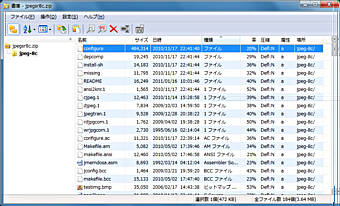

FileVisorには、zip/cab/7zip/tarといった書庫ファイルを開いて、 格納されているファイルの内容を確認したり、書庫から解凍するアーカイバーが組み込まれています。

ファイルペインで書庫ファイルを選択し、
メニューから［ツール］－［ファイル閲覧］コマンド
を実行すると、書庫ビュアが起動します。
初期設定では Vキーにこのコマンドが割り当てられています。
オプション設定のタブ中に ［アドインツール］の設定があります。 この機能を利用すると、FileVisorで内蔵するアーカイバー以外のお気に入りのアプリケーションプログラムを、 アーカイバーとして登録することが可能です。
FileVisorでは各種書庫ファイル（zip/cab等）の内容を表示したり解凍したりするには、 それぞれの書庫に対応したライブラリが別途必要ですが、 標準で実行環境によって以下のような書庫操作を追加ライブラリなしでサポートしています。
| 種別 | ZIP | CAB | TAR | 7zip | RAR | LZH | BGA | ISH | ARJ |
|---|---|---|---|---|---|---|---|---|---|
| 拡張子 | (zip, jar xpi, war) | (cab) | (tar, tz, z gz, tgz bz2, deb lzma, xz) | (7z) | (rar) | (lzh) | (bza, gza) | (ish) | (arj) |
| 32bit | ○ | ○ | ○ | ○ | △ | ○ | ○ | ○ | ○ |
| 64bit | ○ | ○ | ○ | ○ | △ | － | － | － | － |
△…解凍のみ
ライブラリを入手するには 統合アーカイバプロジェクト のホームページをご参照ください。